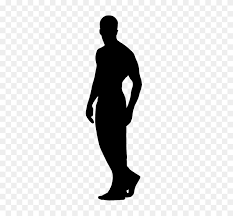
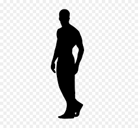
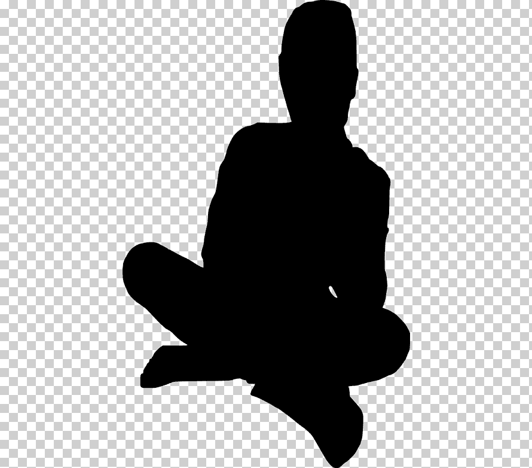
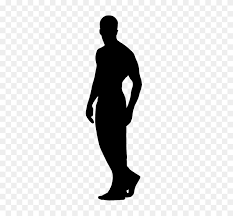

Mis Fotos
 



MY STORY
Soy Leonardo Sanchez nací en Venezuela el 08 de febrero de 1990, tengo 31 años de edad actualmente soy ingeniero de gas natural con experiencia en el área de marketing digital, Me considero una persona dinámica y proactiva me gusta hacer y aprender de todo un poco. En el ámbito artístico desde los 15 años comencé en una academia de baile con la finalidad de aprender, y al pasar el tiempo tuve distintas presentaciones en eventos como 15 años, teatro, danza nacionalista entre otros, también tuve la oportunidad de actuar en una pequeña escuela de teatro obteniendo un papel secundario al inicio y uno de los principales luego con el pasar del tiempo, donde se presentó la obra “Viacrusis viviente”, en el ámbito del modelaje en mi país tuve una pequeña preparación con publicidad foto pose que me enseño mucho al posar para una fotografía. Al pasar el tiempo me dedique a mi carrera de ingeniero hasta graduarme, luego de eso Hace dos años aproximadamente llegue a la argentina con muchas metas y sueños en mi maleta, una de ellas siempre ha sido ser modelo publicitario ya que amo las fotografías, y los hermosos paisajes que este país tiene, por lo tanto aproveche los recursos (paisajes) y con ayuda de amigos hice varias fotografías, me sigo dia a dia preparando para llegar a ser un gran modelo.
